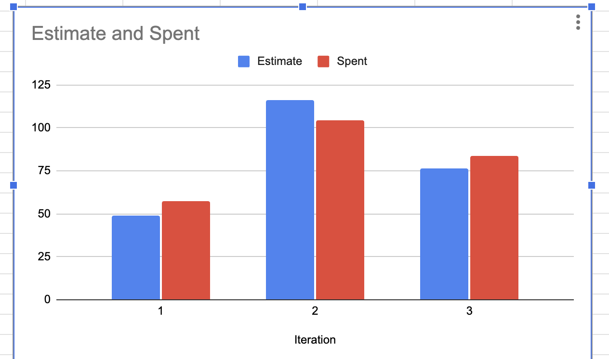

ClinicFlow
Physician's Office Management System
Built by Boolean Hooligans — COMP 3350 Winter 2026
Learn MorePhysician's Office Management System
Built by Boolean Hooligans — COMP 3350 Winter 2026
Learn MoreThis project delivers a secure, role-based Physician's Office app that manages patient records, appointments, and clinic workflows for physicians, office staff, and patients.
This app keeps accurate, current records of physicians' schedules, patient data, staff information, and clinical visits. This helps office staff and physicians manage their work more efficiently and leads to a more organized approach to scheduling and data management.
This app is designed for physicians, patients, and office staff, and it allows the office to go paperless in its approach to storing data and handling its day-to-day activity. Physicians use the app to set and manage their weekly availability, view their upcoming appointments, mark appointments as completed, and add clinical notes for completed visits. Office staff use the app to book and cancel appointments on behalf of patients, and to look up patient and doctor records. Patients can create their own accounts, book appointments with available doctors by choosing from open time slots, view their upcoming and past appointments along with any clinical notes from the doctor, and cancel appointments they no longer need.
The app maintains patient records that include personal information, appointment history, and clinical notes from completed visits. It supports appointment scheduling while preventing conflicts in physician availability. The app automatically generates available time slots based on each doctor's weekly schedule and prevents double-booking, booking outside availability windows, and booking beyond a two-week window. When a doctor updates their availability and it overlaps with existing hours, the app detects the conflict and allows the doctor to replace the old availability, automatically cancelling any affected appointments. Access to information is controlled through role-based security, ensuring that data is only accessible to authorized users. This role-based access is given at the start via login and authentication. Patients can create an account freely, but only the admin can add physician and office staff accounts to the app. This app does not provide diagnostic or treatment decision support. Its focus is on improving workflow efficiency within a physician's office rather than supporting complex hospital environments.
The value this app adds is to reduce administrative overhead, minimize scheduling errors, and improve access to accurate patient information by centralizing all clinic operations in a secure digital platform. Physicians spend less time on paperwork and can manage their own availability directly, office staff can manage appointments on behalf of patients more reliably, and patients experience faster scheduling and better continuity of care through access to their appointment history and doctor notes.
This project will be considered successful if:
Self-register, book and cancel appointments, view appointment history and clinical notes.
Set weekly availability, manage appointments, complete visits and add clinical notes.
Book and cancel appointments on behalf of patients, look up patient and doctor records.
Manage user accounts for physicians and staff. Control who has access to the system.
Secure login with role-based access control. Patients, doctors, staff, and admins each see role-appropriate interfaces.
Book appointments from auto-generated 30-minute time slots. Prevents double-booking, past-date booking, and out-of-availability scheduling.
Physicians set weekly availability by day. Schedule changes automatically detect and cancel conflicting appointments.
View appointment history with clinical notes. Doctors complete visits by adding notes that become part of the patient's record.
Physicians record visit notes and diagnoses after completing appointments. Notes are stored permanently in patient records.
Doctors and staff can search for patients by email. Staff can view all doctors and their availabilities.
Office staff can book and cancel appointments on behalf of any patient, streamlining front-desk operations.
Admins add and remove doctor and staff accounts. Patients self-register but clinical staff require admin approval.
Backend & Persistence Lead
Contributions: Designed and built the database layer and core business services. Led backend and persistence refactoring for SOLID compliance. Wrote unit tests and managed GitLab issues and milestones.
Skills Gained: Database design, SOLID principles, dependency injection, testable code design, integration testing, GitLab workflow, technical documentation.
Frontend & Presentation Lead
Contributions: Built all UI screens and navigation flows. Led presentation layer refactoring using design patterns. Wrote E2E tests. Managed GitLab issue tracking and task delegation.
Skills Gained: Android UI development, design patterns, Espresso testing, SOLID refactoring, GitLab project management, documentation.
Testing & Business Logic
Contributions: Wrote integration and E2E tests. Refactored business layer classes. Created architecture documentation and retrospective.
Skills Gained: Integration testing, JUnit and Mockito, code smell identification, GitLab branching and merge requests, technical writing.
Models & Persistence
Contributions: Created domain models and database tables. Refactored authentication for SOLID compliance. Fixed validation logic. Wrote E2E tests.
Skills Gained: Domain modeling, database schema design, SOLID principles, Espresso testing, GitLab version control, documentation.
Testing & Models
Contributions: Wrote unit tests across business layer classes. Fixed domain model issues and improved test coverage.
Skills Gained: Unit testing with JUnit, domain modeling, test-driven development, GitLab issue tracking, working in a layered architecture.
Problem: Email was treated as a system-wide identity but was only validated as unique for patients. The same validator was reused for doctor and staff creation, yet duplicate checking only called getPatientByEmail. This meant a person could theoretically have multiple accounts with the same email across different roles.
What Changed: We refactored UserSignupValidator to validate by getUserByEmail instead of role-specific lookups. Duplicate checks now apply to every user type. We also updated the repository to support cross-role lookup and ensured all user creation paths call the same unified validator.
Evidence of Improvement: The system now enforces global email uniqueness. This eliminated cross-role duplication, reduced ambiguous lookup behavior to a single deterministic result, and removed several classes of bugs related to incorrect retrieval and deletion. Tests were updated to validate all users by email system-wide.
ClinicFlow follows a 3-tier architecture: Presentation, Business, and Persistence, with a shared Models layer. The business layer contains services (AuthService, AppointmentService, DocAvailabilityService, TimeSlotService, LookupService), validators, and exception classes. The persistence layer uses segregated interfaces (UserPersistence, AppointmentPersistence, DoctorAvailabilityPersistence) implemented by SqlRepository with three focused helper classes. The presentation layer uses Strategy and Factory patterns for shared screens.
Our estimation accuracy improved across iterations. In Iteration 1, actual time spent exceeded estimates significantly. By Iterations 2 and 3, the gap narrowed to approximately 10%. The biggest factor in estimation errors was inconsistent time tracking and tasks expanding into larger problems for which we failed to create separate issues.
